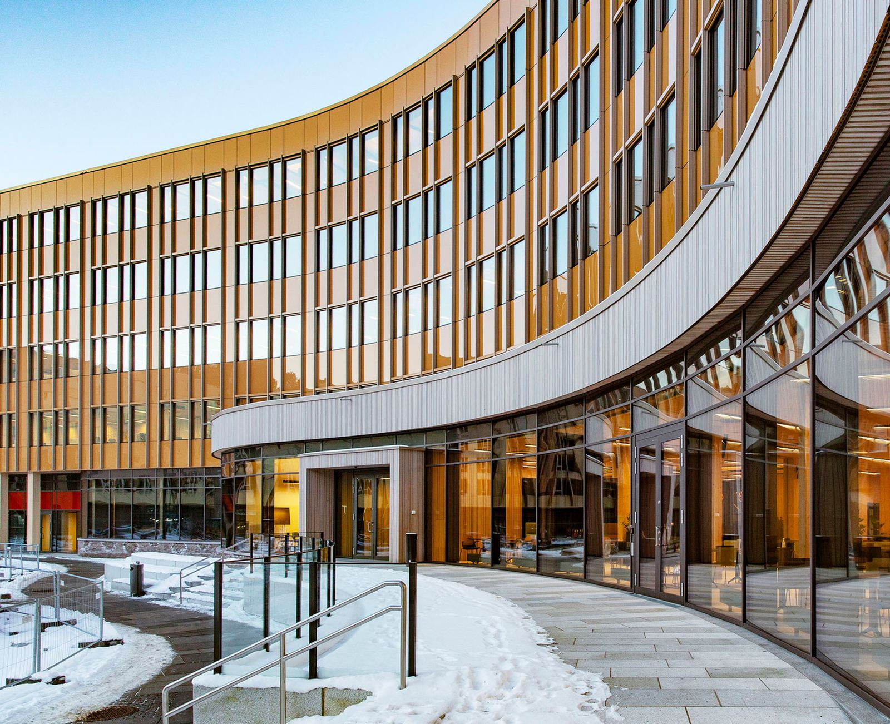
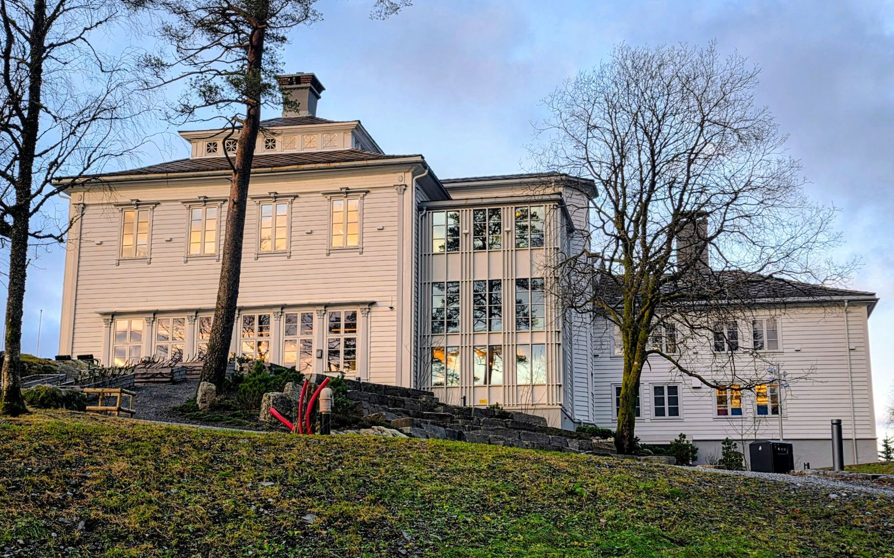

radgivning · BERGEN
PROSJEKTER
FLØIRESTAURANTEN SKIPET HELLEBAKKEN 10 FJELL FESTNING FLØIBANEN LERØY MOXY CORNERTEATERET GULLHORGABU STOKKEDALSLIEN 17 SE FLERE PROSJEKTER... Holmedalsgården 5A, 5003 Bergen, Norge
Dette gjør vi
NÆRING OG KONTOR
KULTUR OG OFFENTLIG
BOLIG OG FRITID
Om PAAL J KAHRS ARKITEKTER
FLØIRESTAURANTEN SKIPET HELLEBAKKEN 10 FJELL FESTNING FLØIBANEN LERØY MOXY CORNERTEATERET GULLHORGABU STOKKEDALSLIEN 17 SE FLERE PROSJEKTER... Holmedalsgården 5A, 5003 Bergen, Norge
Close ALLE PROSJEKTER TRANSFORMASJON OG OMBYGGING NÆRING OG KONTOR KULTUR OG OFFENTLIG BOLIG OG FRITID OM OSS KONTAKT PAAL J KAHRS ARKITEKTER AS er et arkitektkontor i Bergen med lang erfaring fra transformasjon, kulturbygg, næringsbygg, boliger og komplekse byggesaker. Gjennom mer enn 40 år har vi arbeidet med prosjekter der eksisterende bygg, kulturmiljøer, landskap og omgivelser setter viktige premisser for løsningene.
Vi arbeider med prosjekter der eksisterende kvaliteter er en del av løsningen – enten de finnes i bygningen, kulturmiljøet, landskapet eller stedet.

Fra arbeidet vårt
Slik jobber vi
- 01
Ta kontakt
Ring eller send skjemaet, og fortell kort hva du trenger.
- 02
Vi avtaler befaring
Vi ser på forholdene og snakker gjennom hva som skal gjøres.
- 03
Du får skriftlig tilbud
Du vet hva jobben koster før den starter.
Mer om det vi gjør
Vi utvikler prosjekter med utgangspunkt i stedet – bygninger, landskap, kulturmiljøer og omgivelser. Målet er ikke å skape et bygg som kunne stått hvor som helst, men løsninger som hører hjemme akkurat der de er.
Vi følger prosjektene gjennom hele prosessen – fra tidlige avklaringer og mulighetsstudier til ferdig bygg. Erfaring fra både private oppdragsgivere og profesjonelle eiendomsaktører gir et godt grunnlag for å utvikle prosjekter som fungerer arkitektonisk, praktisk og økonomisk.
PAAL J KAHRS ARKITEKTER AS · Holmedalsgården, 5003, BERGEN
Be om tilbudTa kontakt
- E-postpaal@kahrs-arkitekter.no
- AdresseHolmedalsgården, 5003, BERGEN